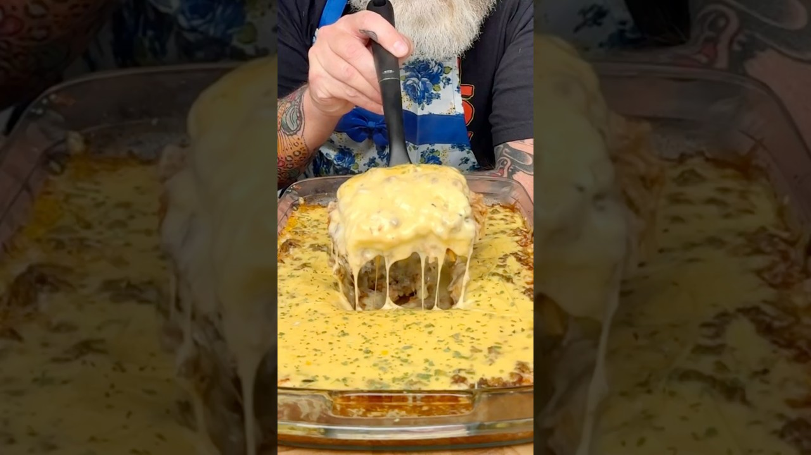

Reconstructed from the video's narration (spoken recipe) — the video has no written recipe in its description. Quantities and steps below are only those actually stated out loud; see "Gaps in this export" for what wasn't specified.
Source: Drew Cooks – YouTube
1 lb ground beef
Cooking oil, for the pan
1 packet taco seasoning
2 packets taco rice
1 cup chicken broth
1 jar salsa, plus 1 jar's worth of water
1 bag shredded Mexican cheese blend
1 tub store-bought queso
Cilantro, to garnish (optional)
Heat oil in a pan over medium-high. Add the ground beef, break it up, brown it, and drain.
Add a packet of taco seasoning and cook per the packet instructions. Set the taco meat aside.
In a 9x13 baking dish, combine the 2 packets of taco rice, 1 cup chicken broth, the jar of salsa, and 1 jar's worth of water. Stir.
Sprinkle the taco meat evenly over the top.
Cover completely with the shredded Mexican cheese.
Cover the dish with aluminum foil and bake at 350°F for 45 minutes.
Carefully remove the foil. Heat the tub of queso in the microwave per its instructions, then pour it over the top.
Return to the oven, uncovered, for about 5 more minutes.
Garnish with cilantro if desired. Serve.
Gap in this export: Size of the taco seasoning packet
Gap in this export: Size / type of the taco rice packets
Gap in this export: Size of the salsa jar (used again as the water measure)
Gap in this export: Size of the cheese bag and the queso tub
Gap in this export: Amount of cooking oil
Gap in this export: Number of servings